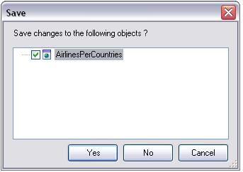

Closing the current Knowledge Base. When this option is selected, GeneXus checks if there is any object that was not saved after being created or modified. If that's the case, a notification window is displayed, as shown below:  This is the only way to close a Knowledge Base, either by saving the change with Yes, or by ignoring it with No. A click on Cancel cancels the closing operation and returns the Knowledge Base to the status prior to the option selection.
|